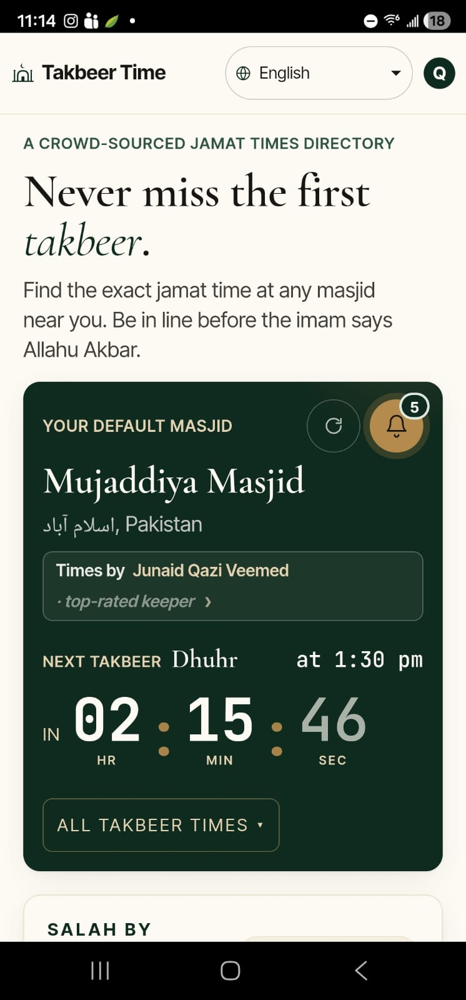
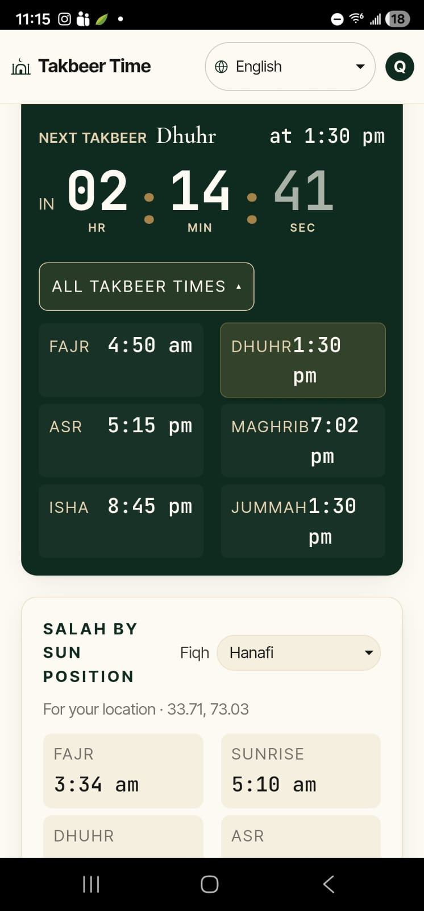
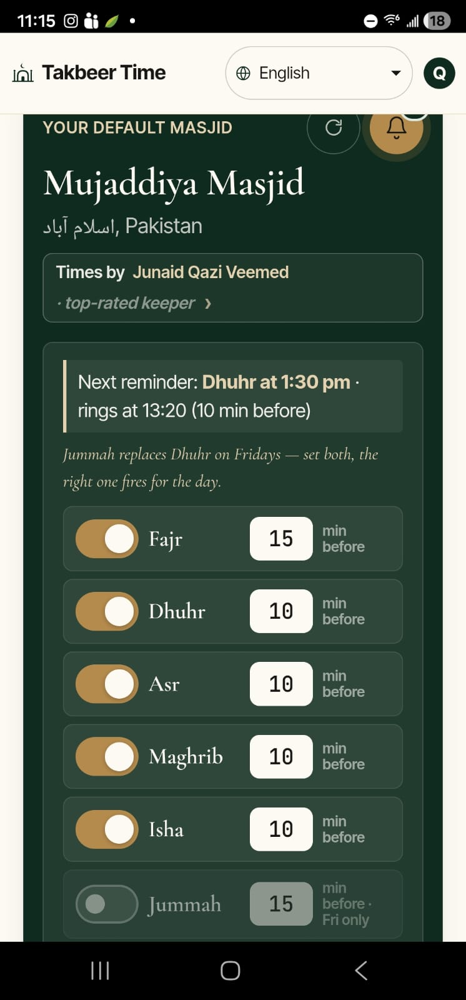
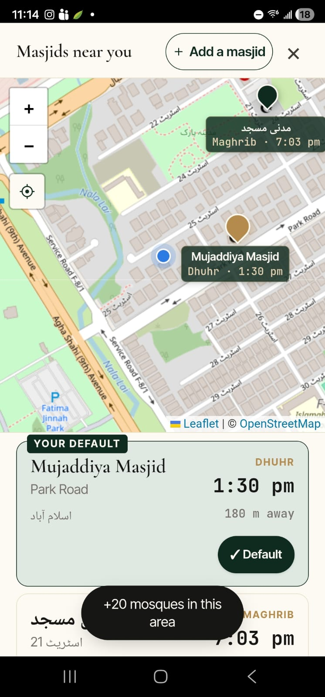
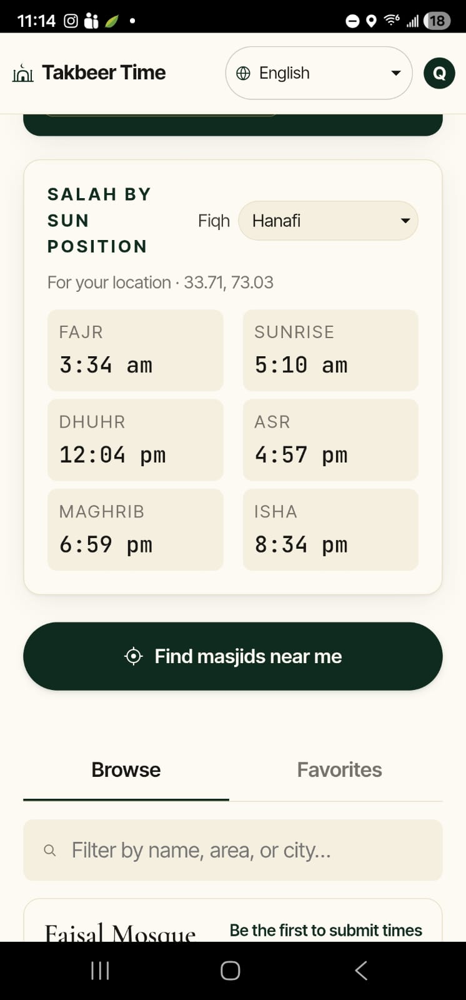
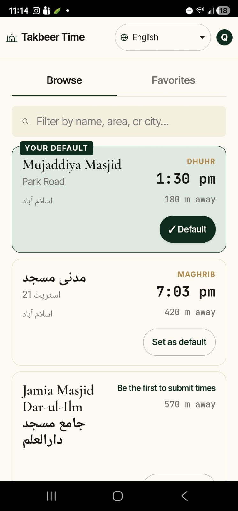

Jummah replaces Dhuhr on Fridays — set both, the right one fires for the day.
- Fajr min before
- Dhuhr min before
- Asr min before
- Maghrib min before
- Isha min before
- Jummah min before · Fri only
A crowd-sourced jamat times directory
Jummah replaces Dhuhr on Fridays — set both, the right one fires for the day.
Computed from your phone's GPS location.
Takbeer Time mobile app
Download the Android app to find nearby masjids, follow trusted time keepers, and set prayer reminders that ring even when the app is closed.






Built for real masjid jamat times
Most prayer times, salah, and namaz apps show when the prayer window begins. Takbeer Time is for the moment your local masjid actually starts jamaat: Fajr, Dhuhr, Asr, Maghrib, Isha, and Jummah. Search nearby masjids, follow a trusted timekeeper, and keep your family on time for the first takbeer.
Find “jamat times near me,” check the next iqamah at your default masjid, and set reminders before jamaat.
Publish accurate masjid prayer times, receive suggested corrections, and let followers know when timings change.
Use the open API to show crowd-sourced jamaat and Jummah times on your own site or community display.
Nothing to show here.